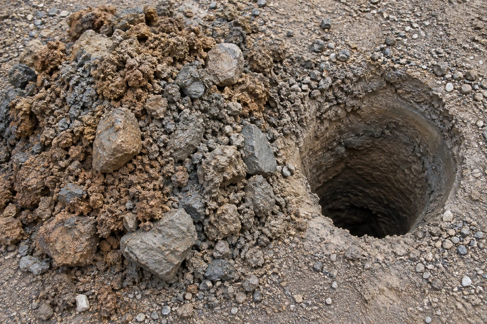

Скважины в Калтане: грунт, скорость проходки и фон
Скорость бурения определяется не мощностью установки, а породой. Показываем переход от категории буримости к срокам и конструкции — и отдельно разбираем техногенный фон района золоотвалов.
У соседа пробурили за день, а на вашем участке та же бригада возится вторые сутки — и первая мысль обычно про недобросовестность подрядчика: тянет время, экономит на людях, хочет содрать больше. На деле дело обычно не в этом, а в куда менее драматичной причине: под соседним двором оказалась порода помягче, а под вашим — потверже. Разбираем, что такое категория буримости, как она меняет темп работ и конструкцию скважины, и отдельно — что в Калтане стоит знать о состоянии подземных вод рядом с золоотвалами.
Что такое категория буримости и почему она решает больше, чем мощность установки

В буровой практике грунты и горные породы различаются не только по названию — «песок», «глина», «известняк», — но и по тому, насколько трудно их разрушать инструментом. Это свойство и называют буримостью: рыхлые, несцементированные породы вроде песка или суглинка проходятся легко и быстро, а плотные, сцементированные или скальные породы требуют кратно больше времени и энергии на тот же метр ствола.
Это не абстрактная теория для инженеров. В перечне факторов, которые формируют стоимость и сроки бурения, категория буримости пород на участке стоит наравне с глубиной горизонта, диаметром скважины и материалом обсадной колонны — это признанный, а не второстепенный параметр сметы. Смысл в том, что одна и та же установка на одном и том же режиме способна за смену пройти в мягком грунте в разы больше метров, чем в плотной, сцементированной породе, — и это разница не в добросовестности бригады, а в физике разрушения материала.
Отсюда и главный практический вывод для владельца участка: если сроки и итоговая стоимость у соседей заметно разошлись при формально одинаковой технике и одном и том же подрядчике, первым делом стоит спросить не «почему так долго», а «через какую породу пришлось пройти». Ответ на второй вопрос обычно снимает вопрос к первому.
Износ инструмента и смена долота
У разницы в буримости есть прямое следствие, которое реже объясняют клиенту, но которое напрямую двигает график работ, — износ инструмента. Долото или коронка, разрушающая породу, стачивается тем быстрее, чем тверже и абразивнее материал: в мягких песках и суглинках один и тот же инструмент способен пройти значительно больше метров, чем в плотных сцементированных прослоях или в породе с включениями более твёрдых обломков.
Смена долота — не мгновенная операция: колонну труб приходится поднимать, менять рабочий орган и снова спускать, и на глубоких стволах это ощутимая часть рабочего времени, которая никак не связана со скоростью самого разрушения породы. Поэтому на участке, где порода часто меняется по твёрдости слой за слоем, темп бурения падает не только из-за самой твёрдости, но и из-за количества остановок на смену инструмента — и это тоже часть объяснения, почему одна скважина в Калтане бурится заметно быстрее другой при внешне похожих условиях.
Реакция на трудную по буримости породу зависит и от того, каким способом вообще ведётся проходка: там, где один метод начинает буксовать на плотном прослое, другой способен пройти его быстрее — чем принципиально различаются подходы к разрушению породы и какой метод для каких пород эффективнее, подробно разобрано в статье роторное и ударно-канатное бурение.
Как порода определяет диаметр и число обсадных колонн
Буримость влияет не только на скорость, но и на саму конструкцию ствола. Проходка ведётся телескопически: верхняя часть, где обычно залегают рыхлые и неустойчивые породы, проходится большим диаметром и сразу крепится обсадной трубой, чтобы стенки не осыпались и не перекрыли ствол; ниже, во вскрытой более устойчивой породе, диаметр можно уменьшить и вести проходку дальше без немедленного крепления. Чем именно определяется диапазон диаметров у разных способов проходки и как это устроено у конкретной буровой техники, подробно разобрано в статье возможности буровой установки.
На практике это значит: чем толще и неустойчивее верхний рыхлый слой на конкретном участке, тем раньше приходится ставить обсадную колонну и тем больше шансов, что потребуется не одна, а две ступени крепления разного диаметра, прежде чем ствол дойдёт до стабильной породы. Территория, где расположен Калтан, относится к Кузнецкому межгорному артезианскому бассейну — толще угленосных осадочных пород, поверх которой в долинах лежит собственный слой рыхлых четвертичных наносов; мощность этого верхнего слоя на юге Кузбасса умеет меняться от полутора десятка метров до почти нуля на протяжении нескольких десятков метров — контраст между соседними дворами возникает именно на этой границе. Подробный послойный разрез территории с конкретными цифрами по мощности и водообильности каждого горизонта — в статье геология юга Кузбасса.
Итог для конструкции скважины простой: у двух участков в одном районе может в итоге получиться разное число ступеней обсадки и разный итоговый диаметр рабочей колонны — не потому что один подрядчик экономил, а другой нет, а потому что порода под ними отличалась ещё до начала работ. Из чего в целом складывается смета на бурение и какие статьи расходов в ней меняются в зависимости от подобных условий участка, разобрано отдельно: из чего складывается цена скважины.
Техногенный фон Калтана: золоотвалы и фенолы в подземных водах
У Калтана, помимо породы, есть и отдельная особенность, которая к буримости отношения не имеет, но важна для того же участка и той же скважины, — состояние подземных вод рядом с золоотвалами Южно-Кузбасской ГРЭС. По данным регионального доклада о состоянии окружающей среды Кузбасса за 2024 год, в зоне влияния золоотвалов в подземных водах продолжает фиксироваться превышение нормативных значений по фенолам — от 1,5 до 8,5 раза выше предельно допустимой концентрации, хотя сами концентрации, по тому же докладу, немного снизились по сравнению с предыдущими наблюдениями.
Это не повод считать, что вода в Калтане в принципе непригодна, — превышение зафиксировано именно в зоне влияния конкретного объекта, а не по всему городу разом, и по общему выводу того же доклада загрязнение вблизи техногенных источников обычно локализуется рядом с ними и ослабевает по мере удаления. Но это прямой повод не полагаться на предположение «раз вода прозрачная и без запаха, значит, всё в порядке»: фенолы органолептически себя выдают не всегда и не сразу, а факт близости к золоотвалам — уже сам по себе основание проверить состав воды лабораторно, а не по внешним признакам.
Почему в таком районе анализ воды обязателен
Соединение двух факторов — неоднородной по буримости геологии и близости к объекту с зафиксированным техногенным превышением — делает лабораторный анализ воды в Калтане не формальностью «для порядка», а практически обязательным шагом после завершения бурения. Одна скважина в микрорайоне может показать чистый протокол, а соседняя, вскрывшая ближе к золоотвалу тот же горизонт, — превышение по конкретному показателю; предсказать это заранее по внешнему виду воды или по опыту соседей не получится.
Какие именно показатели стоит заказывать в лаборатории, когда это делать и как читать готовый протокол, подробно разобрано в отдельной статье: анализ воды из скважины. Для Калтана это не общая рекомендация «на всякий случай», а прямое следствие того, что написано выше про золоотвалы.
Уточнить, с какой породой и конструкцией придётся иметь дело на конкретном участке в Калтане, точнее всего на месте — при выезде инженера в рамках заказа бурения скважины на воду.